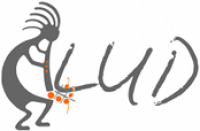

Con este proyecto pretendemos crear una aplicación libre para referenciar geográficamente el arte callejero inicialmente en Bogotá, para asi poder crear una vitrina para todos esos artistas anónimos de nuestra ciudad, esta aplicación esta planeada para ser una aplicación web optimizada para dispositivos móviles. Es el proyecto conjunto de los miembros activos del grupo GNU/Linux de la Universidad Distrital Francisco Jose de Caldas. Para mas informacion a cerca del grupo por favor visita la pagina oficial del GLUD El conocimiento te hace libre, libera el conocimiento.
